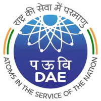

Project Kratos
Project description goes here.

I am a final year undergraduate at the Electrical and Electronics Department at BITS Pilani, Goa Campus majoring in Electrical and Electronics. I am a huge fan of building autonomous robots.
I am currently pursuing my Bachelor's thesis as a research fellow in the NAVIR²eS research group at ISAE-SUPAERO, France under Dr. Damien Vivet. The work I am doing here mainly focusses on building an Active SLAM system with multiple co-ordinating ground robots to explore a 3D terrain.
I served as the lead for the Robotic Arm subsystem of Project Kratos which is a prototype Mars rover built from ground up by our team for participating in the University Rover Challenge and the International Rover Challenge. Apart from this, I have been actively involved in various technical robotics projects in BITS Goa.
Programming has been something that I have loved to do for a very long time now. I am thankful to have found interest in building autonomous robots where I get to put my skills to use. Apart from this, I play chess and love running. If you wish to collaborate on a research project involving SLAM, please feel free to contact me. I will be very happy to collaborate! :)
| August 2023 | Created my personal website. |
| July 2023 | Started working on an exciting new project. |

|
ISAE-SUPAERO, FranceCurrently pursuing my Bachelor's thesis at the NAVIR²eS research team in the field of Active Simultaneous Localization and Mapping for multiple co-ordinating robots with main focus on optimizing the exploration strategy to minimise map and localization uncertainity during SLAM. |
|  |
Indira Gandhi Center For Atomic Research, IndiaWorked on the STM-32 microcontroller to distinguish between alpha and beta radiation after being passed through a scintillation device. Carried out signal denoising and analysis on the emitted radiation to obtain discrimination results. |
InGenDynamics, IndiaI played a key role in building the navigation stack and programming the required global and local planner algorithms for Aido (an autonomous homespace robot). Apart from integrating the custom planner into the ROS Navigation stack, I also worked on face and object recognition using YoloV4. |
Project description goes here.

Project description goes here.
Project description goes here.